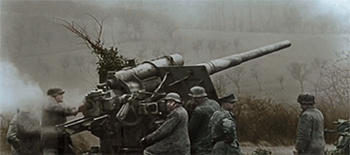

Principais motivos:
Muitos interpretam de maneira errônea que o assassinato do arqueduque, herdeiro do trono austro-húngaro, foi o motivo que levou posteriormente a todo aquele conflito. Porém, a morte do mesmo fez com que fosse apenas mais um motivo ( a gota d'água ) para que estourasse a guerra.
Então, vai aqui, os reais motivos:
-O expansionismo alemão, que fez com que houvesse uma rivalidade entre outras nações vizinhas, como Inglaterra e
França.
-Em razão de uma guerra anteriormente travada entre alemães e franceses ( Guerra Franco-Prussiana 1870-1871 ), na qual a França saiu derrotada, houve o crescimento do antigermanismo francês.
-Houve, também, o crescimento do antigermanismo inglês, devido à grande concorrência industrial e financeira que afetava o mercado de ambos países.
-A disputa por colônias na Ásia e África aumentou ainda mais a tensão entre os países europeus.
-Pan-Slavismo, que foi a disputa entre Bósnia e Sérvia pelo controle da Bósnia.
O Desenrolar da Guerra...
As nações europeias vendo que um conflito era questão de tempo para acontecer, firmaram alianças militares:

Tríplice Aliança: Alemanha, Austro-Hungria, Império Otomano e Itália.
Tríplice Entente: França, Inglaterra e Rússia.
Após a morte de Francisco Ferdinando ( austro-húngaro ), A Áustria-Hungria lança um ultimato à Servia para investigar o crime, dentre outras sanções, porém os sérvios não acataram. Áustria-Hungria declara guerra à Sérvia.
Depois disso, é uma bola de neve... Todo mundo declara guerra contra todo mundo.
A Guerra foi caracterizada por duas fases:
-Guerra de Movimento: foi a fase inicial caracterizada por avanços dos alemães em direção à França, quase chegando à Paris.
A Alemanha pretendia enfrentar a frente Ocidental para depois enfrentar os Russos. Entretanto, os alemães foram detidos pelas tropas francesas.
-Guerra de Trincheira: Nessa fase, as condições nas trincheiras eram degradantes, como falta de comida e aparecimento de doenças.
Durante essa fase, não houveram avanços significativos das tropas, mas muitas mortes de ambos os lados. A Itália muda de time... Sim... Ela entra para a Tríplice Entente.
Um fator que fez com que a guerra mudasse o rumo, foi a entrada do Estados Unidos. A entrada desse país foi extremamente vantajosa para o mesmo, que começou a vender e exportar alimentos e equipamentos bélicos.
A Rússia acaba deixando a guerra, pois estava eclodindo no país a Revolução Socialista de 1917, assim, deixando a Alemanha com apenas uma frente de batalha ( França e Inglaterra ).
As consequências de toda essa guerralha aí...
Primeiramente, vamos falar do que aconteceu no Brasil.
Houve um surto de industrialização em nosso país devido ao fato de não conseguirmos exportar o nosso principal produto, o café. Países europeus que eram os nossos principais compradores, diminuíram as suas demandas por café. O que isso tem haver com a industrialização ?? Começamos a investir em nossas indústrias para que o país não dependesse tanto do mercado.
Agora, as consequências para os países que realmente participaram da guerra foram um pouco ruins...
Para a Alemanha, o país perdedor da guerra, as consequências foram: a perca de todas as suas colônias e exército, indenização milionária para o país pagar e outras séries de sanções.
Houve a criação da Liga das Nações, que é equivalente a ONU atualmente.
Ao todo foram 8 milhões de mortes.
Todas essas sanções, especialmente para a Alemanha fizeram com que crescesse um sentimento de vingança entre os países, guardando um rancor, que seria descontado em um conflito muito mais sangrento 27 anos depois...